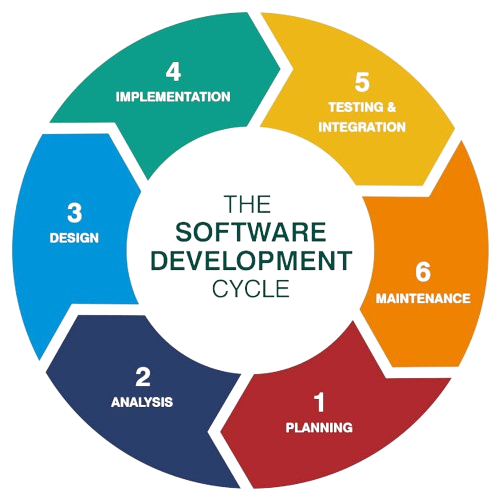

Data-driven Development (DDD) is a software development methodology that emphasizes making decisions based on data analysis and empirical evidence rather than intuition or speculation. In DDD, the development process is guided by insights derived from data collected from various sources, including user interactions, system logs, and performance metrics.
One of the key principles of DDD is the continuous collection and analysis of relevant data throughout the development lifecycle. By leveraging data analytics and visualization tools, development teams gain valuable insights into user behavior, system performance, and emerging trends, which inform decision-making and prioritize development efforts.
Another aspect of DDD is the iterative and incremental approach to development. Instead of relying on predefined plans or assumptions, teams adapt their strategies based on real-time data and feedback, allowing for more agile and responsive development cycles.
By embracing Data-driven Development, organizations can foster a culture of experimentation and innovation, where decisions are grounded in empirical evidence and continuously validated against user needs and business objectives. This approach not only reduces the risk of project failure but also enables organizations to stay competitive in a rapidly evolving market landscape.
In conclusion, Data-driven Development offers a systematic and data-driven approach to software development, enabling organizations to make informed decisions, optimize resource allocation, and deliver products that meet the evolving needs of their users and stakeholders.